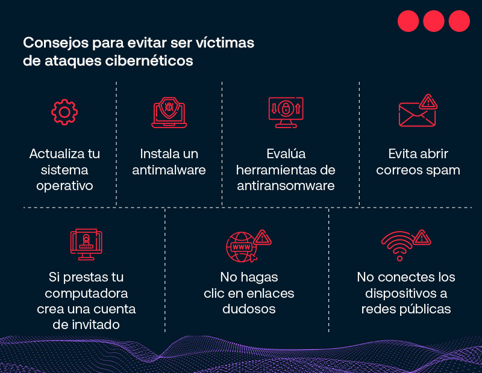
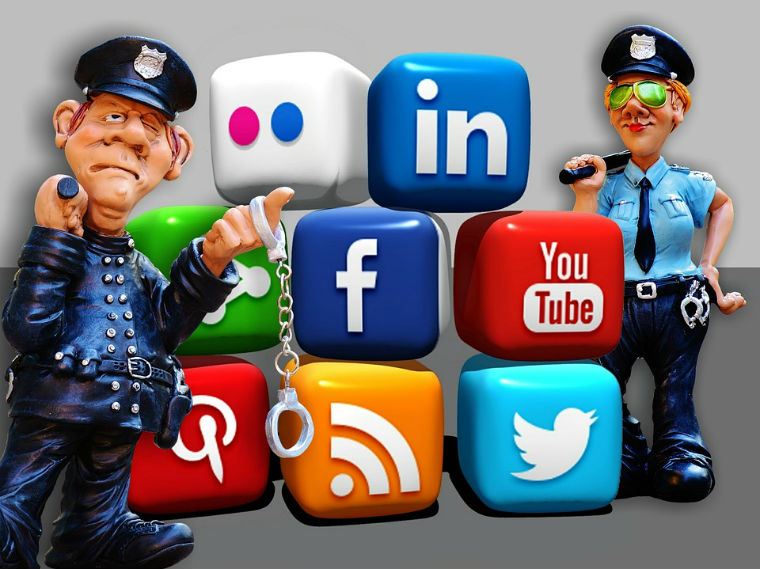
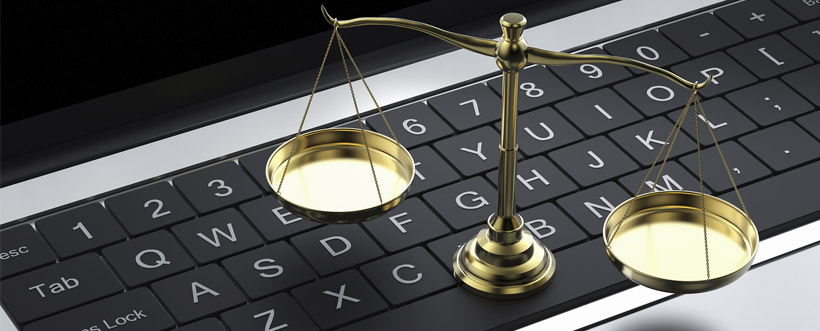

Bienvenido/a a nuestra página web dedicada a la prevención de datos cibernéticos.
En un mundo cada vez más conectado, proteger nuestra información y privacidad en línea se ha vuelto fundamental.
Aquí encontrarás consejos prácticos y medidas de seguridad para salvaguardar tus datos y navegar de manera segura por el mundo digital.
Aprende cómo evitar los riesgos y proteger tus datos personales de manera efectiva.
¡Comencemos juntos este viaje hacia una experiencia en línea más segura y protegida!
CONSEJOS DE PREVENCION
Utiliza contraseñas fuertes y únicas para cada cuenta en línea. No las compartas con nadie.
Ten cuidado con los correos electrónicos sospechosos o de remitentes desconocidos, evita hacer clic en enlaces o descargar archivos adjuntos de mensajes no solicitados.
Al usar redes Wi-Fi públicas, evita acceder a cuentas bancarias o ingresar información personal sensible.
Asegúrate de que los sitios web que visitas utilicen conexiones seguras (HTTPS) para proteger tus datos.
Sé cuidadoso con la información personal que compartes en redes sociales, ajusta la privacidad de tus perfiles y evita publicar detalles personales como tu dirección o número de teléfono.
Realiza copias de seguridad periódicas de tus datos importantes en un dispositivo externo o en la nube.
Mantén tu software y sistemas actualizados con las últimas versiones y parches de seguridad.
Habilita la autenticación de dos factores (2FA) en tus cuentas siempre que sea posible para una capa adicional de seguridad.
Elimina correctamente los datos de dispositivos electrónicos que ya no necesites, utilizando métodos de borrado seguro.
Contraseñas Fuertes
Utiliza contraseñas largas y complejas que combinen letras mayúsculas y minúsculas, números y caracteres especiales. Evita utilizar información personal predecible.
Phishing
No respondas a correos electrónicos sospechosos y nunca compartas información confidencial a través de enlaces en correos electrónicos. Verifica la autenticidad de los remitentes.
Redes Wi-Fi Públicas
Evita realizar transacciones financieras o ingresar datos personales en redes Wi-Fi públicas. Utiliza una red privada virtual (VPN) para una conexión más segura.

TIPOS DE ATAQUES
Ransomware: Un ataque que bloquea tus archivos o sistema y exige un rescate para restaurar el acceso.
Malware: Software malicioso diseñado para dañar, robar información o tomar el control de tu dispositivo.
Phishing: Correos electrónicos falsos que intentan engañarte para que reveles información personal o financiera.
Suplantación de Identidad: Fingir ser alguien de confianza para engañar a las personas y obtener información sensible.
Ataque de Denegación de Servicio (DDoS): Saturar un sitio web o servicio en línea para que no esté disponible para los usuarios legítimos.
Ataque de Fuerza Bruta: Intentos repetidos para adivinar contraseñas o claves de acceso.
Ataque de Hombre en el Medio: Interceptación de la comunicación entre dos partes para obtener información confidencial.
Ataque de Ingeniería Social: Manipulación psicológica para engañar a las personas y obtener acceso a sistemas o información.
Ataque a la Base de Datos: Acceso no autorizado a bases de datos para robar o manipular información.
Ataque Zero-Day: Explotación de vulnerabilidades desconocidas antes de que se lance una solución.
Uso Seguro de Redes Sociales y Medios Digitales
Las redes sociales y los medios digitales son herramientas poderosas, pero es importante tomar precauciones para proteger tu privacidad y seguridad en línea:
Revisa y ajusta la configuración de privacidad en tus perfiles de redes sociales para controlar quién puede ver tu información personal y tus publicaciones.
Evita publicar detalles personales como tu dirección, número de teléfono y información financiera en plataformas públicas.
Sé selectivo al aceptar solicitudes de amistad o seguidores, y verifica la autenticidad de las cuentas antes de compartir información con desconocidos.
Mantén tu perfil profesional actualizado y cuidadosamente curado, evitando publicaciones controvertidas o personales.
Ten cuidado con las fotos y videos que compartes, ya que podrían ser accesibles por otras personas incluso después de un tiempo limitado.
Antes de hacer clic en enlaces o descargar archivos de mensajes directos, verifica la fuente y asegúrate de que sean legítimos.
Mantén las conversaciones privadas en las plataformas de mensajería de la plataforma en lugar de compartir información sensible públicamente.
Utiliza contraseñas fuertes y cambia tus contraseñas regularmente para evitar el acceso no autorizado a tus cuentas.
No compartas tus contraseñas ni las escribas en mensajes o notas visibles.
Revisa y aprueba las configuraciones de seguridad y notificaciones para mantenerte informado sobre la actividad en tus cuentas.

HERRAMIENTAS DE SEGURIDAD
Utiliza estas herramientas para fortalecer tu seguridad en línea:
Software Antivirus: Protege tu dispositivo contra malware y amenazas en línea.
Cortafuegos: Controla y filtra el tráfico de red para evitar accesos no autorizados.
Gestores de Contraseñas: Almacena de forma segura y organiza tus contraseñas.
Redes Privadas Virtuales (VPN): Protege tu conexión y privacidad en redes públicas.
Extensiones de Navegador: Agrega extensiones de seguridad para bloquear anuncios maliciosos y rastreadores.
Legislación y Regulaciones
Es importante conocer las leyes y regulaciones relacionadas con la seguridad cibernética:
Regulaciones de Protección de Datos: Aprende sobre leyes que protegen la privacidad y el manejo de datos personales.
Leyes Antiphishing: Regulaciones que penalizan el uso de técnicas de phishing y suplantación de identidad.
Normativas de Notificación de Brechas: Requisitos para informar sobre violaciones de seguridad de datos.
Tratados Internacionales: Acuerdos que abordan cuestiones de ciberseguridad entre países.

Recursos Adicionales
Amplía tu conocimiento sobre seguridad cibernética con estos recursos: